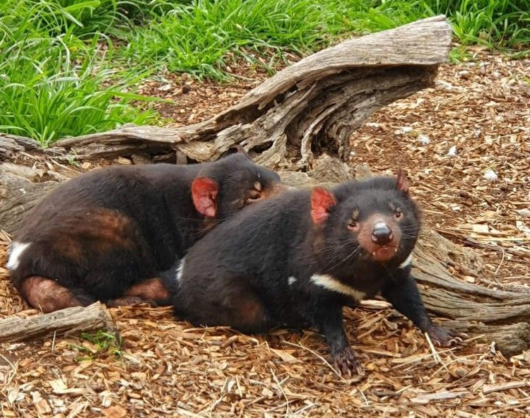
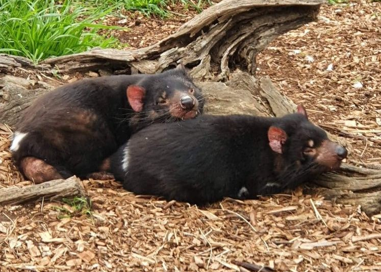
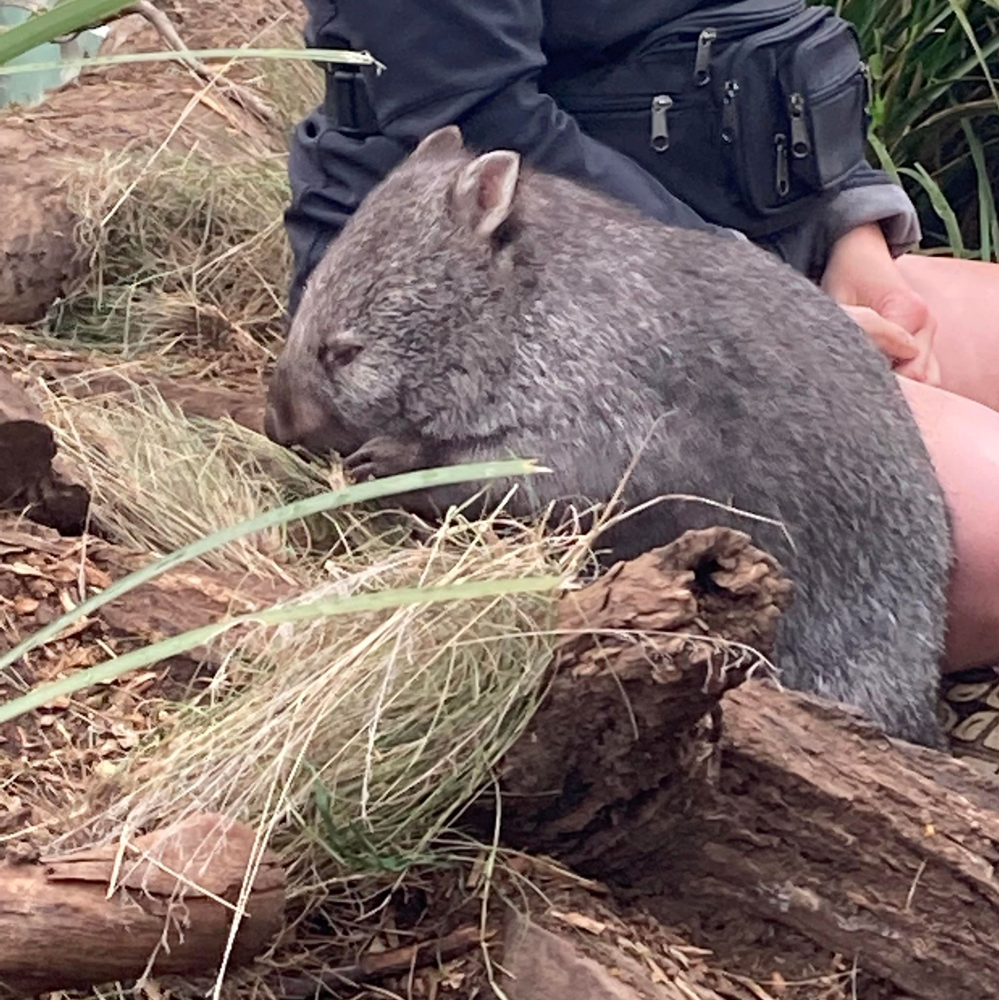

This location is dedicated to helping sick and injured animals! All of the animals that are featured on
this page have or had an illness which has forced them away from their natural habitat. While
adventuring through the area I was able to meet some of the workers who look after these animals! I hope
you are able to travel to this destination to meet these animals!
Tasmanian Devils
The two Tasmanian Devils that live at Barangaroo Wildlife Sanctuary are called Odin and Thor, by the
carers. These
two brothers are blind and are unable to survive on the wild by themselves. While exploring their
area, I observed that their habitat includes fallen logs which allows these animals to hide from
danger. Amazing!

Wombats
This wombat is called Milly by the carers at Barangaroo Wildlife Sanctuary. While observing her, I
discovered that a
wombat's butt is purely fat. This means that a wombat that is being attacked can plug up their
burrow
with their butt and not feel a thing!
